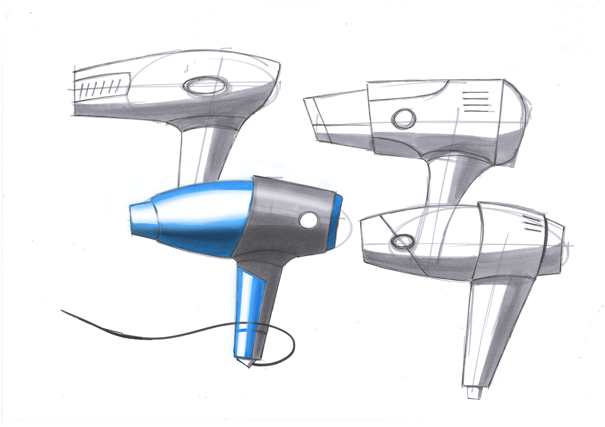

About Me
Read more

Design
Read more
Coding

Read more
Contact Me
Read more
I'm a Designer and Developer studying at and working for Delft University of Technology. I study Industrial Design Engineering and work as Student Coding and Media Support for the TU Delft Library.
Creation is the most fun of all things. Creating an idea and shaping it into something that works is what I love to do. Starting out with bricks when I was young, I started building my ideas and putting them into the world. Later on I discovered coding. Building things with an unlimited number of bricks and tools to work with to show my ideas to others.
Haaaaai 0
I designed a social gathering space for teenagers to meet on Sunday evenings so they can meet up and play games. This is a space created to give teenagers a meeting place and is open to everybody. The idea is to stimulate contact between these teenagers and take them outside their own daily bubble. This is all to combat loneliness, provide new perspectives, and offer teenagers a sense of community with people their own age. This way, they have opportunities to help and support each other. This space started as a messy upstairs area of a church in the city center of Heemskerk. Over a period of about 3 months, I designed and built, with the help of some friends, the entire space. Taking into account budget constraints, flexibility in the purpose of the space, and the fact that the church is a monument, which brings its own restrictions. This project involved sketching, pitching to the church board for a budget, 3D modeling, and ultimately building everything, among many other tasks.
This artwork was created by a team with the goal of stimulating the senses by using sound, lights, and haptics to draw the user in and make the surroundings fade away. Felt was used to stimulate touch within the artwork, while lights and connected headphones created light and sounds based on the position of your hands within the piece. The artwork has "invisible strings" you can play. Three vertical lines where your hands generate and mix sounds and lights. Different heights produced vibrant tones within octaves, and the various strings corresponded to different colors. When playing multiple strings simultaneously, the sound and light would combine into completely new patterns and effects.
With a team of three people, I designed a Mars rover using VR sketching. The rover was created by moving in VR and sketching directly into the virtual environment. After many iterations and changes, this was the final result. We began by creating a full-scale frame to establish the basic shape. Then, through an extensive process, the frame was enclosed using sheets that connected all the ribs. We ensured that every component had double walls to avoid paper-thin surfaces and to provide an interior living space. We added all the necessary elements to make the rover suitable for multi-day missions in the future. Finally, the rover was rendered in Blender to produce high-quality visuals and present the concept.
Haaaaai 4